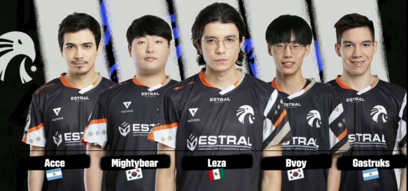

LLA Apertura 2023: Estral Esports roza los playoffs con su victoria ante R7
Nada parece detener al águila mexicana tras varias jornadas de competencia
Con la tercera semana de la temporada de Apertura en curso, la Liga Latinoamérica de League of Legends parece estar en su punto más álgido al enfrentar a los mejores equipos en una serie por el liderato, con Estral Esports y Movistar R7 peleando cara a cara en esta ocasión.
Ambas organizaciones venían de conectar contundentes victorias en las últimas semanas, con Estral haciendo lo suyo al acabar con Isurus e INFINITY, mientras que R7 se encargó de neutralizar a All Knights y The Kings, por lo que esta sería su primera prueba de fuego en el split.
Teniendo en cuenta que las 2 alineaciones cuentan con jugadores veteranos y fichajes prometedores de Corea y Sudamérica, este duelo parecía ser el más parejo hasta ahora, por lo que las expectativas crecieron durante la semana previa al encuentro.
El aguila mexicana sigue sin encontrar rival
Dicho esto, las 2 escuadras mexicanas no tardaron mucho en comenzar las hostilidades, luego de que el carril inferior se transformara en un campo de guerra al minuto 3. Estral lograría quedarse con la primera sangre tras una ofensiva bajo torre de R7, pero el arcoíris no se iría con las manos vacías al conseguir 2 kills antes de que Brandon "Josedeodo" Villegas llegase a controlar la situación.
Tras esto, la acción en este sector seguiría un par de minutos después, ya que mientras Estral se encargaba de asegurar el primer dragón, R7 decidió contraatacar sin éxito, aunque se terminaron llevando una kill más en el proceso.
Esta sería una de las últimas ocasiones en las que el arcoíris lograría sumar algo, ya que a partir de aquí, la ventaja de Estral comenzó a crecer cada minuto tras dejar que Lee "SamD" Jae-hoon desatase el poder de su Lucian. Combinado con el dominio de Josedeodo y su control de objetivos, las águilas pronto penetraron las líneas enemigas al quedar a las puertas de la base, mientras la diferencia de oro ya rozaba los 10 mil.
La última estocada llegaría a los 31 minutos, pues mientras R7 se preparaba para conseguir su segundo dragón, sus rivales atacaron con todo tras conseguir el Barón unos momentos antes. SamD volvería a brillar al hacerse con un magistral asesinato cuádruple, el cual dejó completamente al descubierto las estructuras del arcoíris, que no tardaron en caer a merced del conjunto de Estral.
Para el siguiente enfrentamiento, R7 tomaría la iniciativa nuevamente tras varios minutos bastante flojos, con Jeong "Mireu" Jo-bin consiguiendo la primera sangre seguido del primer dragón de la partida. Estral respondería sin pensarlo acabando con el Heraldo, además de aprovechar la presencia de Josedeodo en el carril superior para igualar las cosas.
Al minuto 11, R7 usaría nuevamente su ofensiva bajo torre para rebasar a Estral, por lo que estos decidieron contraatacar en la top lane dejando su estructura con una sola placa. Minutos después, llegaría un momento clave en el que ambos equipos se enfrascaron en pelea luego de que apareciera el segundo Heraldo, el cual acabó con un exterminio a favor de Estral y con SamD y Emmanuel "Acce" Juárez llevándose recursos valiosos para el juego medio.
A partir de este punto, la composición de R7 se cayó a pedazos al poder detener la presión de Estral. El arcoíris conseguiría respirar un poco tras retrasar la iniciación del Barón y llevarse 3 kills, pero esto no sería suficiente para prevenir lo inevitable y tras un segundo intento, Estral cerraría la partida y la serie con otro 2-0 más para su récord a los 32 minutos.
Así, Estral Esports se coloca en estos momentos como el mejor equipo del split tras asegurar todos los puntos posibles en sus últimos enfrentamientos, y a falta de una serie más, el actual subcampeón de la liga podría afianzar su pase a playoffs si consigue otro 2-0 contra All Knights.
Por otro lado, Movistar R7 tendrá varios choques complicados durante las siguientes semanas, al tener que encarar tanto a Six Karma como a INFINITY en su búsqueda por avanzar a la siguiente ronda.